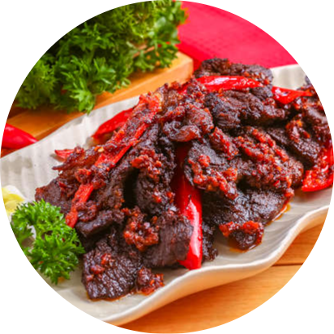
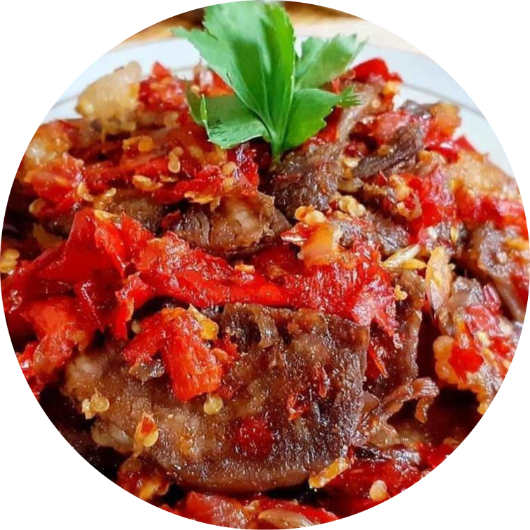

Dendeng Balado
Dendeng Balado adalah masakan khas Sumatera Barat yang dibuat dari irisan tipis dan lebar daging sapi yang awalnya direbus terlebih dahulu, dijemur hingga kering, dan digoreng hingga garing.
Bahan-Bahan
1 kg daging sapi
1500 ml air matang
Minyak goreng
Bahan yang dihaluskan:
5 siung bawang merah
5 siung bawang putih
1 ruas jahe
1 sdm garam
Bahan merebus daging:
2 lembar daun salam
2 lembar daun jeruk
1 batang serai, geprek
3 sdm air asam jawa
Bumbu sambal balado:
15 buah cabai merah besar
10 siung bawang merah
3 lembar daun jeruk
2 sdm air jeruk nipis
1 sdt garam
1/2 sdt gula pasir
200 ml minyak goreng
Cara Membuat
1. Lumuri daging dengan garam dan bumbu untuk merendam. Diamkan selama 30 menit sebelum direbus;
2. Selanjutnya siapkan panci untuk merebus daging, bisa menggunakan panci presto. Masukan air, daging bersama bumbu perendamnya, daun salam, daun jeruk, air asam jawa, dan garam. Rebus daging selama 30 menit atau sampai daging empuk;
3. Lalu setelah daging empuk, angkat dan tiriskan. Dinginkan daging sebentar, lalu potong-potong dan pukul sedikit agar daging lebih pipih;
4. Panaskan minyak cukup banyak untuk menggoreng daging. Goreng daging sebentar saja. Balik sekali saja di setiap sisinya. Kemudian angkat dan tiriskan;
5. Selanjutnya ialah membuat sambal balado. Caranya dengan ulek kasar cabai merah besar, garam, dan bawang merah. Siapkan pula jeruk nipis dan daun jeruk;
6. Panaskan minyak goreng, masukan cabai dan bawang yang sudah diulek dengan daun jeruk. Masak hingga cabai layu dan harum. Setelah itu masukan garam dan air jeruk nipis. Masak hingga sambal balado matang;
7. Masukkan daging yang sudah digoreng ke dalam sambal balado lalu diaduk sedikit demi sedikit hingga bumbu meresap ke daging. Dendeng balado siap dihidangkan.

